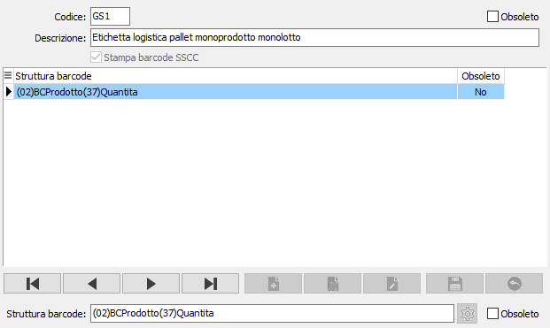
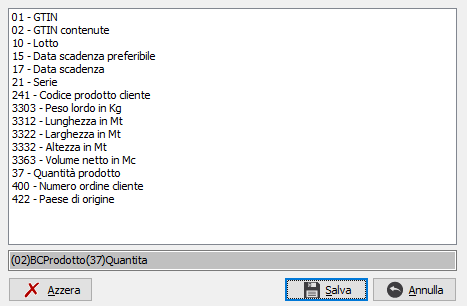

Definizione etichette
Il GS1-EAN128 è un codice che utilizza le specifiche del codice a barre Code128 e consente la rappresentazione di codici complessi come il GTIN (Global Trade Item Number), oppure il SSCC (Serial Shipping Container Code o etichetta logistica), all’interno del quale includere varie informazioni come ad esempio il lotto di produzione, la data di scadenza, il peso in kg. In pratica il GS1-EAN128 permette la concatenazione di più informazioni commerciali o logistiche tramite l’utilizzo di codici identificativi (Application Identifier) denominati AI che consentono di definire il significato del campo che sarà riportato di seguito.
la compilazione di questa tabella consente di definire la struttura dell’etichetta barcode etichetta prodotto di tipo EAN128 oppure di tipo GS1 SSCC (etichetta logistica) utilizzando i campi a disposizione all’interno della base dati di OS1.
E’ possibile creare due tipi di etichetta: l’etichetta di tipo prodotto e l’etichetta di tipo logistico (SSCC) spuntando la casella "Stampa barcode SSCC" la casella può essere modificata solo se non sono presenti strutture barcode.
.

Nella parte inferiore della tabella deve essere indicata la “Struttura barcode” tramite la pressione del pulsante accanto alla descrizione si attiva la finestra di selezione degli AI gestiti da utilizzare per la composizione del barcode. Per aggiungere un AI al codice deve essere effettuato il doppio clic del mouse sul nome del campo; il pulsante Azzera consente di svuotare il codice composto.

Sono attivi alcuni controlli per segnalare gli AI che devono essere necessariamente utilizzati insieme o che non possono essere utilizzati insieme. In particolare:
gli AI 01-GTIN e 02-GTIN contenute: sono entrambi utilizzati per l’identificazione del prodotto, corrispondono al codice barcode del prodotto di OS1 e non possono essere utilizzati insieme, lo 02 è utilizzato solo per etichette di tipo SSCC;
gli AI 10-Lotto, 15-Data scadenza preferibile, 17-Data scadenza, 21-Serie: sono legati al lotto del prodotto presente sul documento, i campi 10 e 21 corrispondono al codice lotto di OS1 e i campi 15 e 17 alla data scadenza lotto;
l’AI 241-Codice prodotto cliente: corrisponde al codice prodotto del cliente intestatario del documento, definito nelle codifiche in anagrafica prodotti;
gli AI 3303-Peso lordo in kg, 3312-Lunghezza in Mt, 3322-Larghezza in Mt, 3332-Altezza in Mt, 3363-Volume netto in Mt: sono legati alle misure indicate sul rigo del documento;
l’AI 37-Quantità prodotto: indica la quantità del prodotto presente sul rigo del documento, può essere utilizzato solo con etichette logistica;
l’AI 400-Numero ordine cliente: è riferito al campo “Vs. Ordine” presente sul documento;
l’AI 422-Paese di origine: è un campo fisso “ITA” che corrisponde al paese di origine e può essere utilizzato solo insieme agli AI 01 e 02.